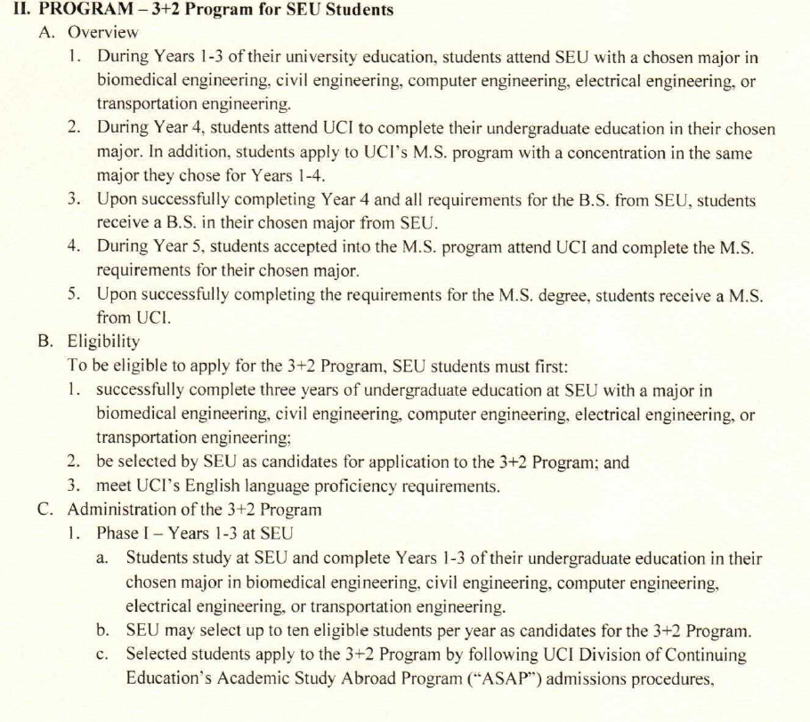
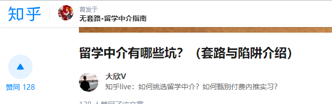
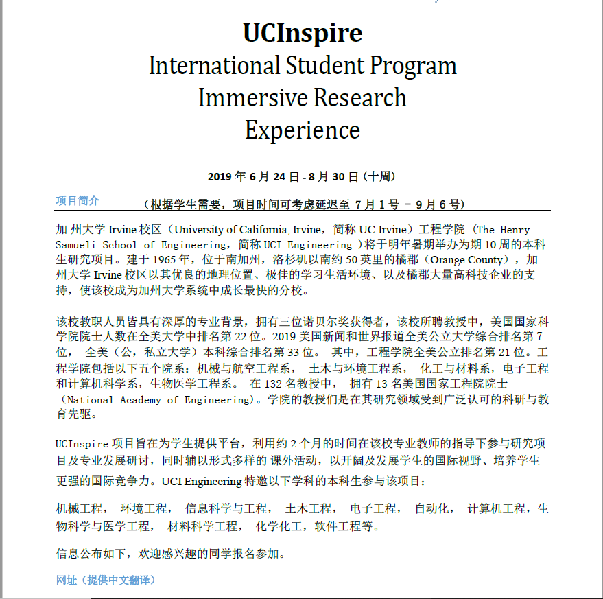
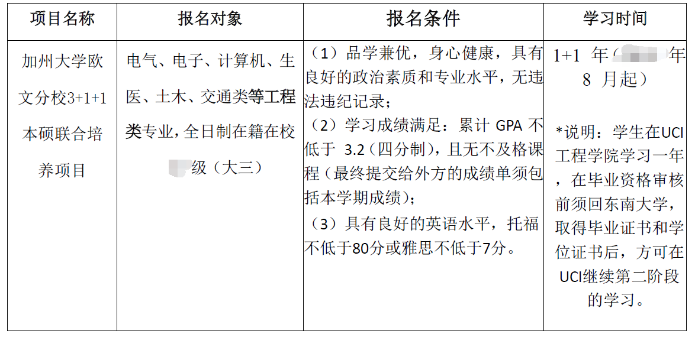
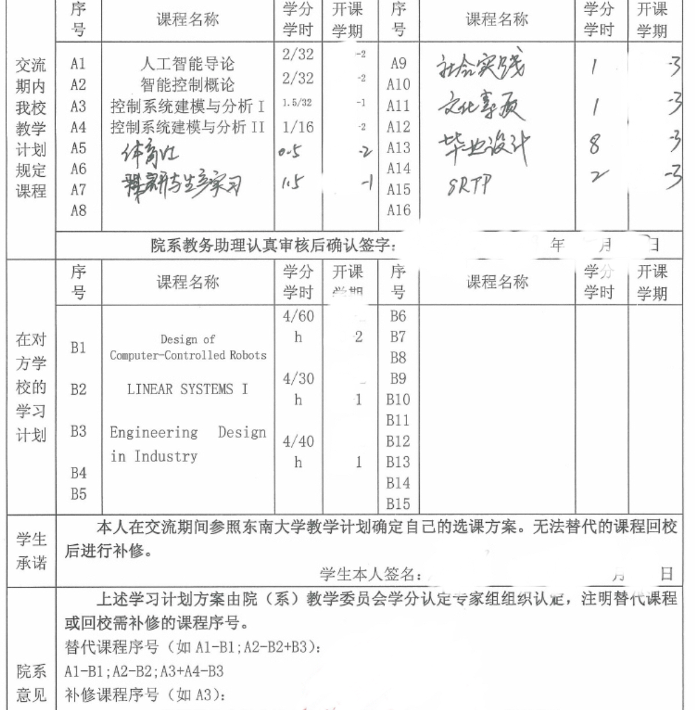
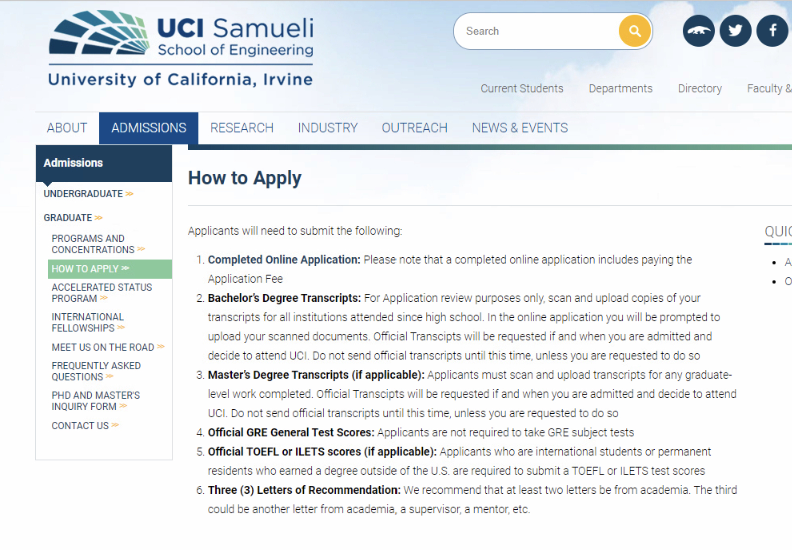

前言
这是一篇加密的文章，如果你能看到这段文字，说明你是东南大学的在校生，或者是其他经过橘子授权的人。写这篇文章的目的主要是因为已经到加州2周左右到加州1个月了，刚刚进入3+2前期的学习阶段，事情还不是很多，难的清净，回想起之前做过的种种繁琐的准备，因而想总结一下有关出国留学的一些计划工作，以及如果申请到了出国留学相应的项目，或者自己大四申请到的国外的研究生，在出发前应该做一些的事情，到了国外（此经验只是以美国的角度来写，去别的国家仅供参考）之后，又应该做哪些工作才能尽快让你适用在国外的生活。
这篇文章预计会分四（只是毛估估，我也不知道会写多少，说不定后面随着时间的推移，还会增加呢哈哈）大段来写，按照时间的顺序，列举一些你每个时间节点上，应该要做，或者推荐你要做的事情，只是以一个3+2项目的留学生身份展开的，如果有一些我没有做到、或者讲到的地方，还请见谅，因为每个人的求学路都不一样，申请项目也大不相同，我会尽量照顾到大部分出国的人需要了解的点，但请一定注意，除此之外，你还应该结合自身情况做适当调整和增减，以适应自身需求。
最后在展开之前，我还想聊聊关于橘子我自己的情况。本人是东南大学的本科生，现在处于学校和UCI（University California of Irvine）3+2项目的第一年，为了防止社工攻击，所以博客进行了加密（虽然我也知道这点信息足够社工了，但还是要规避一下╮(╯▽╰)╭）如果想要联系我，可以发邮件给yichex7@uci.edu，或者在评论区留言，这个博客也是这两个月鼓捣出来的，算是为了新生活做一些准备吧，乘机涨一波关注:)
出国留学前的准备
心理准备
目标
在申请出国项目之前，你最好有一个大概的目标，知道自己为什么一定要出国留学，在国内呆着其实发展前景也蛮不错(研究生，工作，选调生其实能走的路很多）
身边不乏案例有：
- 1.父母觉得去国外镀个金回来而被迫准备留学的
- 2.为了逃避就业和考研的压力，转而想通过一个更长周期的准备来麻痹自己
- 3.觉得出国留学就是终于能到一个父母管不到的地方随便快乐
以上几种情况你真的不一定要选择出国留学，因为留学申请是一个繁杂的工作，而申请到之后，未来2年，甚至5年的人生轨迹可能就此改变。你若不是真心的想去做这样的一件事，可能即使成功地申请到了项目，在异国他乡也会后悔，而到那个时候，再回头也来不及了。
留学途径
Great！现在你已经拥有一个能在留学路上一直激励你的动力，希望你能一直坚持到最后。
既然你已经打定主意要出国学习了，是时候思考一下，在出国留学这个大框架下，哪一个小分类是最适合你了！我这里列举了几个我熟知的出国留学的途径仅供参考：
3+2项目（我的途径）
是指国内大学已经和国外某所大学签订了3+2合作项目，只需要大三期间向国内自己的院校提出申请，办完相应的认证、面试程序之后，如果得到录取，那么你将在大四这一年来到国外进行学习，学习内容不仅限于你国内大四的学分对应可替换的课程、研究生课程以及科研课题等，第一年结束（即大四结束），回到原中国院校领取本科毕业证书，自此你和中国母校再无瓜葛。第二年在国外院校继续学习研究生课程，修满后在国外大学领取硕士毕业证书。
如果你还不是很清楚这个3+2项目是干啥的,可以搜索你们学校的教务处网站。一般都有往年的3+2项目说明文件。
优点：节省大四一年的时间，比同龄人早一年拿到硕士学位，缺点：可选的国外院校较少，只有和学校固定的几个
这里贴上我的项目部分介绍参考：

3+2项目的野路子
这也是我从学长那里听过来的野路子o(￣︶￣)o，有同学曾经这么干：正常第一年进行3+2项目的申请，就读。但是因为有一些3+2项目（就比如我的申请的3+2UCI）是要求我们申请者在第一年大四还要走申请流程的（没错，很扯的要求我们递交一切材料，which means：GRE、TOEFL、recommendation、CV、PS一个都不能拉,我都通过层层选拔拿到offer了您告诉我没有捷径，摔！）这个时候，骚操作就来了：
- 因为同样也要走申请的流程，所以第一年学校的3+2项目负责部门会帮助你规划你的研究、学习，让你适配学校所需求的录取分数线。可是–(￣︶￣)√——鸡贼的人可以借由学校的资源（比如writing center的文书修饰，老板的recommend还有自己第一年的成绩），继而申请更好的学校。
（莫名一种拔x无情的感觉有没有:(） - 3+2项目负责老师：当初是谁哭着喊着要来的？！骗子！都是大猪蹄子！
- 9/17补充，和学校DCE的advisor聊了聊，advisor说学校其实也是明白这个情况的，但是和我举了个很形象的比喻：如果UCB和UCI同时让你选，一定大部分人都会选择UCB的。所以选择申请更好的学校也是人之常情，学校其实也很体谅这种情况的，甚至还会帮你填文书之类的工作
- 相应的，在这里的第一年就比正常的同学还要认真，因为和你竞争的是国内慢慢悠悠在过大四的童鞋，他们基本没有什么课业压力，有中介机构帮忙；而你却在异国他乡一个人应对密集的课程，和老师做study，还要准备资料文书，日子都是数着过得。手边的资源很多，但是怎么利用起来是很费精力的事情。
优点：有更多可以利用的资源，且一年的学习会让你很适应美式的教育体系和这边的生活，第二年完美融入没有问题，且部分学分还能替换（早一点毕业美滋滋）缺点：1.累，什么事都得自己操心（从生活到学习，再到申请，光是计时间节点就够你喝一壶了）2.钱,虽然你会觉得中介机构动辄开口10几万的费用就很离谱，但是国外大学的一年学费起跳3w多刀（这还是折扣过后的），光是一年学费就上20w了，还不说在这租房、吃饭、出门、申请（申请材料也是收费的哦亲，ets成绩单寄送了解一下），所以相对国内的同学，压力还是蛮大的。
在国内大四期间申请
这个也是现在国内大多是想要出国留学的同学会选择的一条道路了。如果还想细分的话，其实还可以再去分类到个人申请和留学机构申请，但是具体操作其实区别不大，个人申请在目标院校选择，文书写作还有时间节点上可能会缺乏一些外界的帮助，但是理论上要是你足够优秀（闲），就可以不依靠外界的支持申请到顶级名校。
仅从我咨询过的留学机构（xdf的前途留学，新航道，世毕盟线下还有杂七杂八的小机构做了电话的咨询）来说，基本留学机构的说辞都是一致的：
先摸清你的成绩和学术背景
->和你一起确定目标院校,有的机构在这步会很坑，因为他们考核的申请学校的名次，高几位低几位对他们来说在一个区间里面，肯定优先给你申低的，过率大还有佣金拿。
->帮你补齐学术背景（GPA是既成事实，除了督促你好好学习，别翘课，他们也无能为力。10月23号更新，复读了一下这段，想起来xdf等机构好像提供课业辅导之类的服务，本质上就是找个研究生/博士生让你不会的时候教教你，所谓的老师估计高数啥的还凑合，专业课。。。就算了吧，能讲透这些知识的人都在做科研，谁会恰这点小钱），这一步基本上都是推销机构自己的研究项目了（这里面水就很深了，如果真想花钱丰富自己的背景，请一定不要看准名头就冲，多半是坑）
->补齐必须的考试，这个一般大企业 （xdf，xhd啥的）会有一揽子解决方案，直接给你整个GRE310分班，雅思6.5班啥的，倒是比较贴（hua）心（qian）
->帮你写文书，一般PS,SoP甚至recommend都可以帮写，会匹配老师给你，这人家比较专业，但小心套模板，富土康模式给你来一套。
->帮你找个这个学校的学长学姐带你了解学校。和舍友的姐姐（本科UCB，工作几年了）聊天才知道，其实国内的机构所谓的优秀学长学姐，不过就是找到这些申到过名校的人，付钱让人家做线上咨询，如果你有朋友/朋友的朋友有这方面的经验，没必要花这冤枉钱。
->申请
有关中介的坑真是一言难尽（当时那个advisor兴致勃勃地和我介绍的时候我就觉得不对），可以参照逼乎上的这篇，这老哥好像一直在做反套路的科普，内容还算可以。

优点：1.如果你是找机构的话，每件事情都有人像初中班主任一样帮你盯着，所以人就很轻松,时间节点上不会出什么问题，信息应该会比较及时 2.时间充裕,这点我是觉得最好的一点了，无论自申还是机构，基本你都会从大一大二就开始接触了，有充足的时间准备GRE/GMAT和IELTS/TOEFL,同时申请季节一般都大四了，除了混毕设等毕业，就是申请的事情，一心一意扑在留学申请上面也蛮不错的 3. 自由,申请期间万一能保研了呢，万一能有去大厂实习工作的机会了呢，未来谁都说不清的 4.申请上限高，理论上一切名校都能上 缺点：1.未来的不确定性相较前俩个3+2有托底的途径，大四申下限同样很大，钱都花了，最后去个美国50+，你甘心吗？ 2.机构套路多,自申的请忽略，申完3+2回过头来看看这些机构，觉得套路真的多，还神烦，在国内的时候均天接到一个电话“xx同学，留学的事情还在准备吗…”，有时候真的感叹中国神奇的个人资料倒卖链条
交流试水
这个应该不算到最后申研究生的范畴里面，但我们的话题是“出国留学”嘛，暑研、学期交换其实都可以算是出国留学，只不过时间比较短，最长的不超过一年这样。往往各个高校都有自己的暑研、学期交换的项目，也有很多官方的组织在做这样的事情，比如SAF还有CSC，所以想初探自己是不是能适应国外的学习、生活的话，是个不错的窗口；同时交流也是个不错的平台能让你获得很多的资源，比如：老师的recommend，外语口语的提高，还有置换的学分一类的事情。
交流是测试你该不该研究生出国的一个试验田，可以给那些摇摆的人一些启示。（P.S. 交流前请充分做好学分置换工作，认识的一个同学没置换成一门课，于是现在过着跨越校区上课的生活）
优点：1.一个实验的机会，有很多事情，只有试了才知道是不是自己喜欢的 2.资源的获取 3.阅历的增长，从人生的尺度来看，有过这样的一个难忘的经历，是很美好的事情 缺点：花钱。我觉得这是唯一的缺点了…也是阻挡大部分人的门槛。如果没有学校的资助，暑研的同学和我算过一笔账，来美国两个月的暑研大概来回要花1w刀左右，其中学费和机票算大头，还只算你学校-宿舍两点一线，要是你想出去玩，吃顿好的，费用更是直接涨上去。性价比相对而言不是最高的，但是能拿到recommend的话，逆向思维，省掉要花在机构和语言班的钱，当一次纯旅游，突然血赚有没有（误）(/ω＼)
这里贴一下uci暑研的介绍参考：

总结一下
以上四种途径身边都有确切例子，所以我列举在这里，个中观点仅供参考。z
选择哪种留学途径其实都有一个绕不过去的问题——钱,虽然很俗套，但是这是不得不面对的问题，甚至有时候是我身边同学考虑最多的问题（即使到了这边也是一样的）。如果家里有矿，或者即将拆迁，当我没说。从我的认识来说，如果你的家境尚可，可以考虑大二/大三的时候申请一个暑期研究的项目看看（大一实在太菜了，C++都没学好，就不要出去丢人）,记住一定是要研究型的项目。不是说授课型的项目不好，只是研究型的项目因为是你直接和导师接触，所以项目结束很大概率能拿到recommend，如果人家因此收了你就更好了做白日梦。recommend这个东西其实在研究生申请里是很重要的一环，具体我会在后面展开。
除去暑研和学期置换这两个选项，如果你是一个希望申请国外研究生的同学，在钱这个问题上请一定和父母达成共识，具体可以参看这里，我出国前一直翻墙去youtube看他们家视频，最近发现b站也有，做出行前准备还是挺不错的。
关于3+2项目，每个学校还会或多或少给与出国学生一些补助，aka，奖学金、来回机票报销或者走csc的报销，以及一些支持，aka，学分置换、毕业设计置换/远程等。
如果走自申同学，请注意一下材料的递交时间节点，而且美国这边是按照semester入学的，所以如果你赶不上fall的申请，晚半年申请spring的也是可以的！
还有一大困难是语言。相信看这篇文章的同学都或多或少知道出国留学要考哪些试，一般来说，来美国的话，语言水平考试，TOEFL和IELTS是都可以考的，不过你可能会受到老师的灵魂拷问：why you choose IELTS ¿ ;去英国、新加坡之类的大学的话，只能考IELTS；研究生入学的话，前往美国还需要考GRE，当然经管类学生叫GMAT，类似美国研究生考试（GRE的verbal是真搞人心态）。在申请以上我提到的项目前，请做好语言准备。
申请准备
终于！到了这一步，你应该已经做好了充足的心理准备和规划，这一章是详细展开有关研究生申请应该做哪些准备的，包含了3+2如何申请项目，以及一般自申会需要哪些程序。（sorry暑研/交流的同学，我没有类似经历，不知道申请准备有啥，有相关经验的同学愿意分享可以发邮件给我yichex7@uci.edu)。
3+2项目的申请准备
对申请3+2的同学来说，申请材料一般校方是会公示的，like this：

所以一般需要递交：1. 英文成绩单 2. 语言成绩 3. 学习计划
有关学习计划，这里多说几句，因为这个很有可能是未来要和教务老师反复更改的东西(⊙o⊙)…一般，在申请递交的时候，是要一并填写学习计划的，这包括你的个人信息，已获得成绩，还有学分置换等等，其中比较麻烦的是学分置换，这个需要你去问来宣讲的老师，他们过去的课程在哪里能看，或者自己google（不要用baidu！不要用baidu！不要，用，baidu！)，找到过往学校开课的课程描述。然后回去查看自己学院的教学计划，找到大四你需要上的课程，然后决定怎么替换。
根据我们学院的老师给的信息，一般来说，置换的外方课程如果找不到一模一样的内容，就要一些相关的课程，比如说，我有一门课叫“人工智能导论”，但是外方没有这课，于是就选个相关的机器人课程”Design of Computer-controlled robots”，总而言之，基本底线是：学分满足，学时满足，内容接近。基本上教务老师是不会为难学生的。
9月29号更新,和别的学校的同学聊天谈起来，发现有一些院校的教务老师对出国交流的学生十分不友好，各种苛刻要求和不讲道理的安排，行政上拖沓找不到人，推脱责任。这里我要吹一吹我们东南的老师，从我申请到出国，后面可能还要改学分置换，学院的要求一开始就讲的很清楚，而且工作时间基本都能找到人，解决的很顺快，见识到渣的学校是怎么对待他们的学生的，感觉学院对我们这些交流的同学还是十分友好的。
但是学分置换这件事，并不是说你在提交了申请之后就不能变动了。如果你碰到了和我一样的情况，像我这样的倒霉蛋一年都没有几个，你想选的课，非常紧俏的被选光了，那么就要联系国内的教务老师进行更改（按照东南的规定，出国1个月之内是可以修改的），手续还是蛮复杂的，要你自己的签名(签了扫描传过去)，教务助理签名，教学院长签名，好像最后还要呈交教务处登记?最好有一个在东大的朋友能替你跑一下行政手续。
这里贴一下我的学分置换:

以上就是你需要在学校项目招生开始期间做的事情，确保自己满足各项条件，且填报完课程置换单。之后你就要开始准备面试了。
面试
除了材料的申请，横亘在很多同学面前的一大难题就是面试。一般因为都是英语面试，而我们中国人一般口语都emmmmmm….缺乏自信？所以在面试前大家的心情都很复杂，巨慌张。
这边给大家两点建议：
1.调整心态，毕竟你面试就说这么一会，真的出国天天都是要说的，不管好坏，让对方明白你的意思就成了。想想印度和日本来的老哥，面试官什么大（yao）风（mo）大（gui）浪（guai）没有见过。
2.找个同项目的学长了解一下，一般你都有学长学姐能找到帮你在申请的时候指点迷津。如果实在你找不到，或者你像我一样是“村里唯一的独苗”，那我提供一下我的经验作参考：
一般情况下，受试者在4-5个左右（多了就装不下镜头了,某肥宅关闭了网页），先来一圈自我介绍，重点可以放在学术背景和参与过的项目上，兴趣爱好/课余活动请一笔带过，有就一两句话，没有不说也行。之后面试官会开始问问题，然后每个人轮流回答，问题主要集中在：你为什么想参加这个项目？你想选择什么专业？你的能力水平契合项目要求吗？是否有深造需求，来这边倾向于做什么？Q&A
这些问题你可以提前做一些准备，还有可以询问一下你们学校管国际交流的老师，3+2的对方学校倾向于招收什么样的学生，你可以在回答的时候挑一些重点来回答对方的问题。比如说uci倾向于招收偏硬件的学生，在面试的时候，我就强调了我的动手能力和pcb能力还不错，能自己做些小东西。也算是一个小trick。
自申的准备
这里的知识来源于我们的一门课——AACC，是教我们如何申请美国的院校的。如果有童鞋发现我有遗漏的地方，可以邮件戳我->yichex7@uci.edu。
先上一张图,让你们看一下uci的grad录取要求:

研究生的申请流程其实每个学校都是不一样的，我只做了UC系的研究生的研究，就发现其实每个大学内部的department要求也不一样，所以如果是自己要申请graduate，请务必注意要通过学校官网一步步点到想要申请的department里面，找到graduate admission，一般会列出具体的流程和ddl。
我所了解到的申请都包括：
- online application：这一步是你迈向申请的第一步，有很多小东西要交，比如：SoP(Statement of Purpose),PS(Personal Statement),成绩单,还有申请费用。这些基本上是每个学校必定会在一开始申请的时候就问你要，所以文书准备在申请前就可以准备起来。而SoP，根据MIT学习中心的说法，花1个月+准备是比较好的，起码要修改4-5版，PS和CV准备时间可以短一点，但也要有所打磨。
为什么这个SoP这么麻烦呢？要花比别的文书还多的时间准备? 当然是它重要啊！这个东西每个大学都会有具体的指导填写方向，所以建议广撒网的同学不要每个学校都一摸一样，在通读了对方的要求之后可以有所保留的copy一些部分，再做添加。说SoP重要，主要是因为它确确实实反映了你过往的学术简历，以及你对某个领域的了解程度，对学校而言，他不仅看的是你现在的成绩，他还要评估如果录了你之后你的表现。所以相比较PS这种讲故事，CV这种表面成就，SoP的重要性比较大，因为它还反映了你未来的成就。 - 推荐信（recommend），接触过留学的同学都懂什么叫套磁吧
recommend的作用就是让教授夸你，使得录取委员会从各个角度来审视你的学习能力。如果你的一封推荐信是行业里的大牛写的，而且是强推，基本在这个行业里面你申请学校会比别人要求低一点，所以有时候人嘛，该舔还得舔(舔狗舔到最后应有尽有)~~。要提醒的还有两点，每个学校要求的recommend数量不同，看仔细了；还有注意别让教授写太多recommend，写多了人家也烦的。 - 语言成绩：GRE/GMAT，TOEFL/ILETS，没啥好讲的，努力考高，到均线就成（话是这样说，均线是真滴难考到啊啊啊啊啊啊啊啊！o(╥﹏╥)o）
除了上述的这些以外，可能学校还会要求提供你别的材料，比如你发表的论文、专利啦，参加过的会议啦，做过的项目啊等等，因人因学校而异。还有要强调一点，成绩单的寄送（包括本科成绩单，语言考的成绩单等），都需要密封包装（sealed）确保安全。而。。。开这样的成绩单，一般都是要单加钱的（真有你的!ets/BC)基本上寄一所学校，一双鞋就没了，贼刺激。 - waiting这步是真的有的一步哈哈哈！一开始我以为只是为了凑数老师才加上去的，但是转头来想想，其实是因为录取是一个学校和学生双向选择的过程，学校发offer的时候，还会设置一个waiting list（当然因学校而异，有的学校会发拒信，有的不发offer等于默拒了）。如果有一个学校拒人是会发拒信的，但offer已经发出去了，你却什么都没收到，很有可能你就上waiting list了。一般来说，是因为学校不确定有多少人收到offer会来，所以给那些总体满意，但有一些缺陷的同学
(备胎）留一个缓冲期，俗称waiting list。
上了waitinglist相比拒信来说还有一线生机。我就上过waitlist，但是3+2项目的waitlist，原因是因为比起给offer最容易的EECS专业，我更想去MAE专业做grad（拒签警告⚠️）。但因为我的成绩有一个C，所以对面学院就很纠结，把我扔到waiting list。我的解决办法就是和对面的项目负责人高强度互动，补充他们觉得我差的部分，成绩差，重修那门课；学术背景不够，做过的项目介绍发过去。总而言之，知道自己被wait的原因，人家留你上wait，说明身上是有闪光点的，但有一些缺陷无法忽视。我们增加自己被补录的唯一方法就是找到这个缺陷，看有没有办法弥补。即使能做的全做了，还要看对面有没有空位留出来，所以只能尽人事听天命。 - 入学。如果你拿到了多个学校的offer，恭喜你！与此同时，你就要做出决定了，到底去哪家学校。决定之后，你需要等对面大学把他们的额I-20表格寄来，然后你拿着这张I-20表格去申请签证，入学。
行前准备
看到这里，你应该对申请学校有了一个大致的了解。具体的细节，针对到个人，还是有很大的弹性和侧重的，请自己实操的时候确保一定要咨询有经验的人士，无论是学校的老师也好/机构的规划师也好/学长学姐也好，他们都可以确保你不走太多的弯路，是申请的助力。当然,也不能本末倒置，申请的主体还是在学生个人身上，期待所有事情都有人帮你操办好，让你按部就班的时代已经过去了。
话不多说，请还没拿到offer的同学到此为止，这之后的内容都发生在取得对方大学给你的offer并寄送给你Ｉ-20表格的基础上，建议取得offer之后再浏览行前准备不迟。